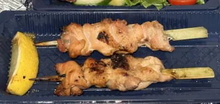
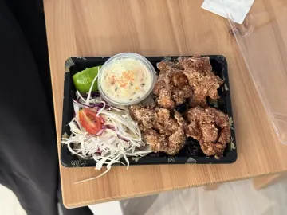
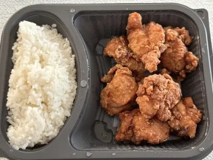
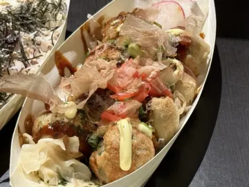

ヘルシンキの居酒屋：焼き鳥・唐揚げ・たこ焼きを楽しむ
仕事帰りに小皿をつまみながら、ビールや日本酒をゆっくり。そんな居酒屋の夜が恋しくなったら。ヘルシンキにも居酒屋の雰囲気を味わえるお店がいくつかあります。上手な楽しみ方を紹介します。
ヘルシンキの「Izakaya」

フィンランドでは、居酒屋は「日本風のガストロパブ」として紹介されることが多いです。一人一品のメイン料理ではなく、みんなでシェアする小皿をいくつか頼み、追加して、最後にご飯ものや麺で締める。日本と同じスタイルですが、フィンランド人の友人を連れて行くなら、注文の仕方を説明してあげると喜ばれます。お酒は日本のビール、ハイボール、日本酒、焼酎など。
何を頼むか
- 焼き鳥：もも、皮、つくね。塩かタレか。
- 唐揚げ：醤油と生姜の下味がしっかり入っているかがポイント。
- 枝豆、揚げ出し豆腐、たこ焼き：定番のおつまみ。
- 刺身と季節の魚。
- 鉄板があればお好み焼きや焼きそば。
- 締めはおにぎりかお茶漬け。
フィンランド人の友人を誘うなら
- 一度に全部ではなく、何回かに分けて注文するスタイルを伝えておく。
- 最初の乾杯は「かんぱい！」。フィンランド語の「キッピス！（Kippis!）」と交換するのも楽しいです。
- お互いにお酒を注ぎ合う習慣も、説明すると喜ばれます。
Savory Scoresのデータより
ヘルシンキで評価の高い居酒屋メニュー
| 写真 | 料理 | お店 | スコア | 本格的さ | 最終評価 |
|---|---|---|---|---|---|
 | Kaisen okonomiyaki | Sake Bar & Izakaya | 10 | 9 | 2024年12月 |
 | Grillattua yakitori-kanaa | Ravintola Kamome | 10 | 7 | 2023年9月 |
| Fried Octopus (タコの唐揚げ) | Murasaki | 9 | – | 2025年7月 | |
 | Karaage | Hanami | 8 | – | 2026年10月 |
 | Tori no karaage | Koto | 8 | 8 | 2025年5月 |
 | MustekalaYaki | Rikiyaki | 8 | 5 | 2025年2月 |
| Okonomiyaki | Rikiyaki | 8 | 8 | 2025年2月 |
2026年10月時点、ヘルシンキ周辺の18か所における評価27件に基づいています。スコアと本格的さは10点満点の平均値です。ほとんどの料理はまだ評価が1〜2件で、メニューも変わるため、最新のランキングはアプリで確認してください。このリストに載るべきお店で食べましたか？Savory Scoresで評価しましょう。
Savory Scoresでヘルシンキの美味しい居酒屋メニューを探す方法
居酒屋では一晩に6品くらい食べて、翌朝にはどれが美味しかったか忘れてしまいがち。Savory Scoresならそれを防げます。
- 料理を検索。唐揚げ、焼き鳥、たこ焼きなどで、ヘルシンキのどのお店が一番美味しいかチェック。
- 一皿ずつ、一秒で評価。「いいえ」「多分」「はい」をタップするだけなので、追加注文の合間にできます。
- 次に行くときは過去の評価を確認して、「はい」の料理だけを注文。
- 友人のおすすめを保存して、次の飲み会で試しましょう。
食べたものを忘れないコツは料理を評価するコツでも紹介しています。
ヘルシンキでお気に入りの一皿を見つけよう。 Savory ScoresはiPhone・iPad向けの無料アプリ。料理を検索して街中のお店を比べ、ワンタップで評価できます。